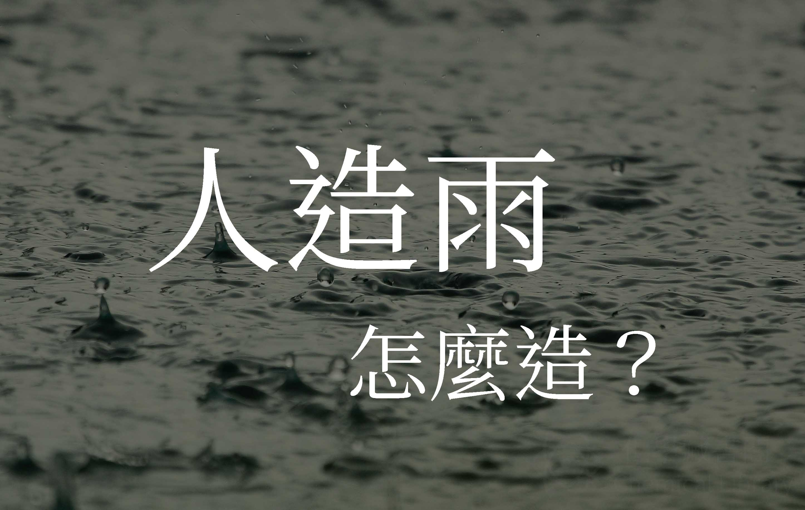

人造雨，用什麼造？
2017年5月2日

今年入春後降雨偏少，水利署今天把握鋒面接近的機會，寶二及石門水庫在上午8時30分及8時40分，已施作人工增雨作業，但原本也要在9時施作的曾文水庫，因雲層不利作業而取消。
水利署長賴建信表示，水利署已與氣象局成立平台，密切聯繫，隨時掌握天候狀況，不放棄任何機會，增加水庫集水區上游入流量，以延長水庫供水時程，降低限水對民眾的影響。(轉自2017年02月22日蘋果日報)
人造雨是麼？
人造雨 又稱 人工增雨 ( rainmaking 、 cloud seeding ) ，是指在濕度不足以降雨的狀況下，透過化學催化水滴凝結，達到降雨的目的
人造雨原理
各位都應該知道，下雨是雲層中的小水滴碰撞結合成大雨滴，下降形成雨，當雲內水滴太小或缺乏冰晶而無法降雨時，我們利用人工方法去產生冰晶或使小水滴長大，促使其產生降雨現象，稱為人造雨。
在雲層灑水
讓雲層中水滴更快結合吸濕性藥粉與液體
透過NaCl等粉末，強制結合雨滴，這些藥劑通常無害冷雲造雲
使用乾冰、碘化銀，乾冰讓雲層溫度下降，促使水滴結成冰晶，碘化銀是非常好的冰晶核
人造雨地點
地面
在地面燃燒碘化銀溶液，使碘化銀分子飄到雲層中空中
在飛機上撒水、乾冰、碘化銀，效率較高，但成本也相對高
人造雨成效
地面
增加10%降雨空中
增加20%降雨
人造雨其他用途
人造雨除增加水庫的水位，還可以拿來撲滅火災